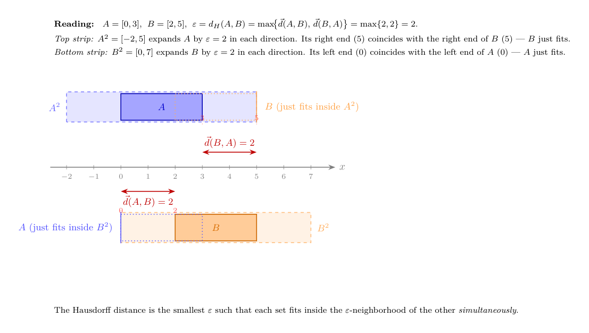
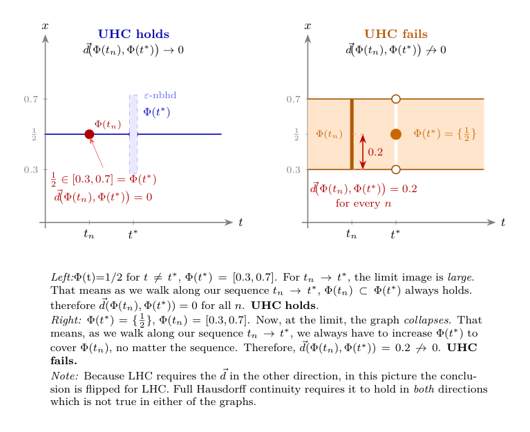

Topic 13: Topology in Practice
(How metrics structure change and space)
1. Picking up the threads
In Topic 4, when we introduced continuity, we also introduced the notion of a metric: a function \(d: X \times X \to \mathbb{R}\) satisfying nonnegativity, the identity of indiscernibles, symmetry, and the triangle inequality. We noted that every topological concept from that topic—open sets, closed sets, convergent sequences, continuity, compactness—can be defined word-for-word in any metric space, with \(d(x, x')\) replacing the Euclidean norm \(\|x - x'\|\). And we deferred the question of why economists might need metrics on objects other than vectors.
In Topic 11 those “other” objects showed up, but we did not stop to explain it. The contraction mapping theorem requires a complete metric space. The space we used was the space of bounded functions \(f: \Theta \to \mathbb{R}\), equipped with the sup metric \[d(f, g) = \sup_{\theta \in \Theta} |f(\theta) - g(\theta)|.\] The points in that metric space are functions — not vectors of numbers — and the metric measures the largest pointwise difference between two functions. We invoked completeness of that space as a fact. We did not ask: why the sup metric? What makes it the right one? What would go wrong with a different choice?
This topic aims to tie up those loose ends and asks one further question:
- When a correspondence maps parameters to sets of choices, how do we measure how much the set changes with the parameter? (The Hausdorff metric.)
A third natural question — when agents hold probability distributions over types or states, what is the right notion of “two distributions being close”? — requires the integral to state properly. We defer it to Topic 14, where we will have that machinery.
With three spaces already on the table — Euclidean space, function spaces, and spaces of sets — we cover most of what formal micro requires. The space of probability distributions joins them in Topic 14.
2. Why the metric matters: two spaces in economics
For most of this course, the objects we compare are vectors of numbers, and the Euclidean metric is the natural choice. But to handle more complex problems, we need to think about other spaces.
Value functions. A value function \(V: \Theta \to \mathbb{R}\) assigns a number to each state. Two value functions are “close” if they assign similar numbers to every state. The sup metric captures this by measuring the maximum difference between the functions across all states. The Euclidean metric makes no sense here: \(V\) is not a finite-dimensional vector (because the set of states is often infinite and not countable). But then how should we measure distance?
Correspondences and their values. A budget correspondence \(B(p, w)\) maps price-wealth pairs to subsets of the commodity space. As \((p, w)\) changes, the budget set changes. Upper and lower hemicontinuity (Topic 5) were our way of saying the set changes “without jumps.” But there is a cleaner formulation: there is a metric on compact subsets — the Hausdorff metric — such that hemicontinuity is just ordinary continuity with respect to that metric. The two-condition definition of continuity for correspondences was not an ad hoc invention; it is the natural decomposition of the Hausdorff distance into its two directed parts. Thus, the Hausdorff metric tells us why UHC and LHC are the correct conditions for continuity of correspondences.
Each of these spaces requires its own metric, and the choice of metric is not cosmetic: it determines what “convergent sequence” means, what “continuous” means, and what “compact” means.
3. The sup metric on function spaces
Let \(\Theta\) be a nonempty set. Denote by \(B(\Theta)\) the set of all bounded functions \(f: \Theta \to \mathbb{R}\) — functions for which there exists \(M < \infty\) with \(|f(\theta)| \leq M\) for all \(\theta \in \Theta\).1
The sup metric on \(B(\Theta)\) is \[d_\infty(f, g) := \sup_{\theta \in \Theta} |f(\theta) - g(\theta)|.\]
Let’s check that this is a metric.
- Nonnegativity. \(|f(\theta) - g(\theta)| \geq 0\) for each \(\theta\), so \(d_\infty(f,g) \geq 0\). [ok]
- Identity. \(d_\infty(f, g) = 0\) if and only if \(|f(\theta) - g(\theta)| = 0\) for all \(\theta \in \Theta\), i.e., \(f = g\). [ok]
- Symmetry. \(|f(\theta) - g(\theta)| = |g(\theta) - f(\theta)|\), so \(d_\infty(f,g) = d_\infty(g,f)\). [ok]
- Triangle inequality. For any \(\theta\) and any three functions \(f, g, h\): \[|f(\theta) - h(\theta)| \leq |f(\theta) - g(\theta)| + |g(\theta) - h(\theta)| \leq d_\infty(f,g) + d_\infty(g,h).\] Taking the supremum over \(\theta\): \(d_\infty(f, h) \leq d_\infty(f,g) + d_\infty(g,h)\). [ok]
So \((B(\Theta), d_\infty)\) is a metric space. Now: why this metric rather than, say, the integral metric \(d_1(f,g) = \int_\Theta |f(\theta) - g(\theta)|\, d\theta\)? (The integral will be developed properly in Topic 14; for now, think of \(d_1\) as summing pointwise differences across all states.) Both are valid metrics for suitable function spaces. But they have different completeness properties, and completeness is what the Bellman operator needs.
Completeness and why it matters
\((B(\Theta), d_\infty)\) is complete: every Cauchy sequence in \(d_\infty\) converges to a limit in \(B(\Theta)\).
Here is why. Suppose \(\{f_n\}\) is a Cauchy sequence under \(d_\infty\). That means for every \(\varepsilon > 0\), there exists \(N\) such that \(d_\infty(f_m, f_n) < \varepsilon\) for all \(m, n \geq N\).
Now under the sup norm we know that for every \(\theta \in \Theta\) and every \(m, n \geq N\), \(|f_m(\theta) - f_n(\theta)| < \varepsilon\). So at each fixed \(\theta\), the real sequence \(\{f_n(\theta)\}\) is Cauchy. Since \(\mathbb{R}\) is complete, the pointwise limit \(f(\theta) = \lim_n f_n(\theta)\) exists for every \(\theta\). One then checks that \(f\) is bounded and that \(d_\infty(f_n, f) \to 0\).2
The integral metric \(d_1\) is not complete on \(B(\Theta)\): a Cauchy sequence in \(d_1\) can converge pointwise to a limit that is unbounded, or can fail to converge uniformly. For the Bellman operator, we need completeness to guarantee that the iterates \(V_0, T(V_0), T(T(V_0)), \ldots\) converge to a fixed point inside the function space, not to a limit that doesn’t belong to it. That is why the sup metric is the right metric for dynamic programming.
Convergence in \(d_\infty\) is uniform convergence
The statement “\(f_n \to f\) in \(d_\infty\)” is equivalent to the classical notion of uniform convergence: for every \(\varepsilon > 0\), there exists \(N\) such that \(|f_n(\theta) - f(\theta)| < \varepsilon\) for all \(n \geq N\) and all \(\theta \in \Theta\) simultaneously. The threshold \(N\) does not depend on \(\theta\).
This is stronger than another form of convergence, pointwise convergence. There \(N\) is allowed to depend on \(\theta\). If you only have pointwise convergence, you might have \(f_n(\theta) \to f(\theta)\) at every individual state, but at some states the convergence is slower and slower, and there is no uniform bound on the error across all states.
An example would be \(f_n(\theta)=\theta^n\) on \(\Theta = [0,1]\). For each fixed \(\theta \in [0,1)\), \(f_n(\theta) \to 0\) as \(n \to \infty\), so we have pointwise convergence to the zero function \(f(\theta)=0\). But for any \(n\), \(f_n(1) = 1\), so the \(\sup |f_n(\theta)-f(\theta)|=1\) for all \(n\), so we don’t get uniform convergence.
For the Bellman operator, which processes the entire function at once, such non-uniform errors would invalidate the contraction argument. Uniform convergence—convergence under \(d_\infty\)—ensures that indeed the functions are getting closer everywhere to the limit already before we reach said limit.
4. The Hausdorff metric on compact subsets
Now consider a correspondence \(\Phi: T \to 2^X\) mapping a parameter \(t\) to a subset of \(X\). We want a metric on sets so that continuity of \(\Phi\) in that metric is equivalent to the hemicontinuity conditions from Topic 5. The answer is the Hausdorff metric.
Definition
Let \((X, d)\) be a compact metric space and let \(\mathcal{K}(X)\) denote the collection of all nonempty compact subsets of \(X\).3
For two sets \(A, B \in \mathcal{K}(X)\), define the one-sided distance from \(A\) to \(B\) as \[\vec{d}(A, B) = \sup_{a \in A}\, \inf_{b \in B}\, d(a, b).\]
This asks: what is the farthest that any point of \(A\) can be from the set \(B\)? Equivalently, \(\vec{d}(A,B)\) is the smallest \(\varepsilon \geq 0\) such that every point of \(A\) lies within distance \(\varepsilon\) of some point of \(B\).
The one-sided distance is not symmetric. If \(A \subset B\) and \(A \neq B\),4 then every point of \(A\) is already in \(B\), so \(\vec{d}(A,B) = 0\); but some points of \(B\) are not in \(A\), so \(\vec{d}(B,A) > 0\).

The Hausdorff metric symmetrizes by taking the larger of the two one-sided distances: \[d_H(A, B) = \max\bigl\{\vec{d}(A,B),\; \vec{d}(B,A)\bigr\}.\]
In words: \(d_H(A,B)\) is the smallest \(\varepsilon\) such that \(A\) fits inside the \(\varepsilon\)-neighborhood of \(B\) and \(B\) fits inside the \(\varepsilon\)-neighborhood of \(A\) — simultaneously.
It is a metric
- Nonnegativity. Clear. [ok]
- Identity. \(d_H(A,B) = 0\) iff \(\vec{d}(A,B) = 0\) and \(\vec{d}(B,A) = 0\), i.e., every point of \(A\) is in the closure of \(B\) and vice versa. Since \(A\) and \(B\) are compact (hence closed), this means \(A = B\). [ok]
- Symmetry. Immediate from the \(\max\). [ok]
- Triangle inequality. If every point of \(A\) is within \(\varepsilon\) of some point of \(B\), and every point of \(B\) is within \(\delta\) of some point of \(C\), then every point of \(A\) is within \(\varepsilon + \delta\) of some point of \(C\). Taking \(\varepsilon = d_H(A,B)\) and \(\delta = d_H(B,C)\) gives \(d_H(A,C) \leq d_H(A,B) + d_H(B,C)\). [ok]
When \((X,d)\) is compact, \((\mathcal{K}(X), d_H)\) is itself compact—a fact known as Blaschke’s selection theorem.5
Connection to hemicontinuity
Here is the payoff. A correspondence \(\Phi: T \to \mathcal{K}(X)\) is:
- upper hemicontinuous at \(t\) (in the sense of Topic 5) if and only if \(\vec{d}(\Phi(t_n), \Phi(t)) \to 0\) whenever \(t_n \to t\),
- lower hemicontinuous at \(t\) if and only if \(\vec{d}(\Phi(t), \Phi(t_n)) \to 0\) whenever \(t_n \to t\).
It is continuous in the Hausdorff metric — meaning \(d_H(\Phi(t_n), \Phi(t)) \to 0\) — if and only if it is both upper and lower hemicontinuous.
Upper hemicontinuity controls the one-sided distance from the image at the nearby parameter to the image at the limit: the set doesn’t suddenly grow. Lower hemicontinuity controls the other direction: the set doesn’t suddenly shrink. The Hausdorff metric demands both simultaneously. The two-condition definition of continuity for correspondences from Topic 5 was not an ad hoc invention; it is the natural decomposition of \(d_H\) into its two directed parts, \(\vec{d}\) and \(\vec{d}\) reversed.
In light of the Hausdorff metric, upper hemicontinuity then means that for any sequence of inputs \(t_n \to t\) the distance of \(\Phi(t_n)\) to \(\Phi(t)\) goes to zero, but the distance of \(\Phi(t)\) to \(\Phi(t_n)\) does not necessarily go to zero.
Lower hemicontinuity means that the distance of \(\Phi(t)\) to \(\Phi(t_n)\) goes to zero, but the distance of \(\Phi(t_n)\) to \(\Phi(t)\) does not necessarily go to zero.
Continuity in the Hausdorff metric means that both hold.

Economic example: the budget correspondence
The budget set \(B(p, w) = \{x \in \mathbb{R}^L_+ : p \cdot x \leq w\}\) maps price-wealth pairs to compact subsets of the commodity space (when bounded). As we established in Topic 5, \(B\) is both upper and lower hemicontinuous in \((p,w)\) at any \((p, w)\) with \(p \gg 0\) and \(w > 0\). The Hausdorff translation: \(d_H(B(p_n, w_n), B(p,w)) \to 0\) whenever \((p_n, w_n) \to (p,w)\). Small price changes produce small changes in the budget set, measured by the Hausdorff distance.
Contrast this with what happens when a price component approaches zero: the budget set expands discontinuously. That is, upper hemicontinuity fails at the non-negativity bound. The budget set is not continuous in the Hausdorff metric there.
5. Topological spaces: a brief orientation
Everything we have done so far has used a metric — a ruler that assigns a number to every pair of points. But there is a more primitive structure hiding underneath, and it is worth naming it, because it is what most of the vocabulary we actually use is built on.
From metrics to open sets
Recall from Topic 4: given a metric space \((X, d)\), a set \(U \subseteq X\) is open if every point in \(U\) has some breathing room inside \(U\) — formally, if for every \(x \in U\) there exists \(\varepsilon > 0\) such that the open ball \(B(x, \varepsilon) = \{y \in X : d(x, y) < \varepsilon\}\) is entirely contained in \(U\). A set is closed if its complement is open.
Every concept we have used in this topic and the preceding ones — convergent sequences, continuity, compactness, completeness — can be defined purely in terms of which sets are open, without ever mentioning the metric \(d\) directly. For instance:
- A sequence \(x_n \to x\) if and only if every open set containing \(x\) eventually contains all \(x_n\).
- A function \(f: X \to Y\) is continuous if and only if the preimage of every open set in \(Y\) is open in \(X\).
- A set \(K\) is compact if and only if every collection of open sets that covers \(K\) has a finite subcollection that still covers \(K\).
So the metric does two things: it gives us a notion of distance, and it gives us a collection of open sets. The second thing is what all the topological concepts actually use.
The topology generated by a metric
Given a metric \(d\) on \(X\), the collection of all open sets it generates — call it \(\tau_d\) — satisfies three properties that can be verified directly:
- \(\emptyset \in \tau_d\) and \(X \in \tau_d\),
- any union (finite or infinite) of sets in \(\tau_d\) is again in \(\tau_d\),
- any finite intersection of sets in \(\tau_d\) is again in \(\tau_d\).
These three properties are all you need. A topological space is a pair \((X, \tau)\) where \(\tau\) is any collection of subsets of \(X\) satisfying these three properties — whether or not there is a metric that generated \(\tau\). The sets in \(\tau\) are called the open sets of the topology.
In this language: every metric space \((X, d)\) is automatically a topological space, with topology \(\tau_d\). The metric is the extra structure; the topology is what you get when you strip it away and keep only the open sets. Conversely, not every topological space arises from a metric — there exist topologies on a set \(X\) that no metric could have generated.6
So the hierarchy is: metric space \(\Rightarrow\) topological space, but not vice versa. A topological space is strictly more general.
Why go beyond metrics?
For most of the spaces in this course — \(\mathbb{R}^n\), the space \(B(\Theta)\) of bounded functions, the space \(\mathcal{K}(X)\) of compact subsets — a metric is available and we have used it. The reason to work with topologies directly is that on some natural and important spaces, there is more than one useful metric, and the two metrics generate different open sets and hence different notions of convergence, continuity, and compactness.
The leading example in economics is the space of all utility functions, or all strategy profiles in a large game. There are two natural topologies available simultaneously:
- The norm topology (also called the strong topology): a sequence \(f_n \to f\) if \(d_\infty(f_n, f) \to 0\), i.e., uniform convergence. This is exactly the topology generated by the sup metric from §3.
- The weak topology: convergence is tested not by checking \(f_n\) and \(f\) uniformly, but by checking that every “measurement” applied to them yields similar values. The precise definition requires the integral, which we develop in Topic 14. What matters here is the structural point: weak convergence is genuinely weaker than norm convergence, and the two topologies are not equivalent in infinite dimensions.
These are two different topologies on the same underlying set \(X\). The norm topology has more open sets (it is finer); the weak topology has fewer (it is coarser). They agree on finite-dimensional spaces like \(\mathbb{R}^n\), but diverge in infinite dimensions.
The choice matters because of compactness. The unit ball in an infinite-dimensional space is compact under the weak topology (this is the Banach-Alaoglu theorem) but never compact under the norm topology. Since fixed-point arguments need compactness, the weak topology is usually the right one in infinite dimensions. We will see this concretely in Topic 14 when we study spaces of probability measures.
Product topology
One topology appears repeatedly and deserves a name. If \(X = \prod_{i \in I} X_i\) is a Cartesian product, the product topology is the coarsest topology making all coordinate projections \(\pi_i: X \to X_i\) continuous. A sequence \((x^{(k)})\) converges in the product topology if and only if \(\pi_i(x^{(k)}) \to \pi_i(x)\) for each coordinate \(i\) separately — coordinatewise convergence.
For a finite product, the product topology is the same as the topology from any natural metric (e.g., the Euclidean metric in \(\mathbb{R}^n = \mathbb{R} \times \cdots \times \mathbb{R}\)). For an infinite product, the product topology is strictly coarser: it requires convergence in each coordinate, but the speed of convergence is not controlled uniformly across coordinates. This is exactly the right topology for the Mertens-Zamir universal type space, where a type is an infinite hierarchy of beliefs (first-order beliefs over the state, second-order beliefs over others’ first-order beliefs, and so on): two types are close if they agree on the first several levels of the hierarchy, with the required agreement growing as the distance threshold shrinks.7
6. Compactness in general metric spaces
In Topic 4, we established that in \(\mathbb{R}^n\), compactness is equivalent to being closed and bounded (Heine-Borel). In a general metric space, closed and bounded is not enough, and we need the correct generalization.
In any metric space, compactness is equivalent to sequential compactness: every sequence has a convergent subsequence.
The proof uses the metric structure essentially — it is not true in all topological spaces, but for metric spaces the equivalence is standard.8
Total boundedness
A metric space \((X, d)\) is totally bounded if for every \(\varepsilon > 0\), the set \(X\) can be covered by finitely many open balls of radius \(\varepsilon\). In \(\mathbb{R}^n\), total boundedness is equivalent to ordinary boundedness. But in an infinite-dimensional space, total boundedness is strictly stronger: a ball of radius \(1\) contains infinitely many points at mutual distance \(\sqrt{2}\) from each other, so it is bounded but not totally bounded.
A metric space is compact if and only if it is complete and totally bounded. This generalizes Heine-Borel: in \(\mathbb{R}^n\), closed means complete (as a subspace of \(\mathbb{R}^n\)) and bounded means totally bounded, so the two conditions reduce to the familiar pair.
Why compactness fails in infinite dimensions
In \(B(\Theta)\) with the sup metric, the unit ball \(\{f : d_\infty(f, 0) \leq 1\}\) is not compact. The sequence \(f_n = \mathbf{1}_{\{\theta \geq n^{-1}\}}\) (indicator of a moving interval) is bounded by \(1\) everywhere, but any two of these functions are at sup distance \(1\) from each other, so no subsequence is Cauchy.9
For the applications in this course — compact type and action spaces, bounded payoffs — the relevant spaces are compact in the appropriate topology, and the tools from Topics 9 and 11 apply directly. The point of raising the failure of Heine-Borel in infinite dimensions is to make clear why those compactness assumptions were made: they are not automatic.
7. Two applications in the syllabus
Dynamic programming
The Bellman operator \(T: B(\Theta) \to B(\Theta)\) is a contraction under \(d_\infty\): applying \(T\) brings any two value functions closer together by a factor of \(\delta < 1\). Completeness of \((B(\Theta), d_\infty)\) ensures the iterates converge. A different metric on functions would not have guaranteed completeness, and the contraction argument would have been vacuous — the iterates might form a Cauchy sequence that converges “outside” the space. The sup metric is not a coincidence; it is the right metric for this problem.
Type spaces and equilibrium existence: a preview
Two further applications — the compactness of spaces of probability measures and its consequences for Bayesian equilibrium existence and mechanism design — require the integral to state precisely. Topic 14 closes this loop: once we know what it means to integrate against a probability measure, we can define weak convergence of distributions, state Prohorov’s theorem (which gives compactness of \(\Delta(\Theta)\) when \(\Theta\) is compact), and explain why compactness of the type space is the standing assumption that purchases everything else in incomplete-information theory. The topological framework built here — metric spaces, completeness, the distinction between norm and weak topologies — is the scaffolding those results sit on.
8. Where this appears in MWG
The foundational material — metric spaces, open and closed sets, Cauchy sequences, continuity, compactness — is in MWG, Mathematical Appendix A. The contraction mapping theorem and the completeness of \(B(\Theta)\) under \(d_\infty\) are stated in MWG, Mathematical Appendix C.
The Hausdorff metric, the product topology on infinite products, and weak convergence of probability measures are not developed in MWG. The standard economics reference for all of these is:
Aliprantis, C. D. and K. C. Border, Infinite Dimensional Analysis: A Hitchhiker’s Guide, 3rd ed., Springer, 2006.
Chapter 3 covers the Hausdorff metric and Blaschke’s selection theorem. Chapters 15 and 18, covering weak convergence and Prohorov’s theorem, will be referenced again in Topic 14. The treatment is self-contained and written for economists.
The type-space construction using the product topology is in Mertens and Zamir (1985) and Brandenburger and Dekel (1993), cited in the footnote above.
In dynamic programming, we restrict to bounded functions because any candidate value function must be bounded if per-period payoffs are bounded and \(\delta < 1\). The restriction is substantively harmless in those applications.↩︎
The key step is that the Cauchy condition in \(d_\infty\) controls the error uniformly in \(\theta\): the same \(N\) works for every \(\theta\) simultaneously. That is what “\(\sup\)” over \(\theta\) buys. This uniform control is what allows the pointwise limits to assemble into a limit in \(d_\infty\) rather than merely a pointwise limit.↩︎
Note that here we start out with a metric already defined on \(X\) for points. Now we are defining a new metric on sets of points building on that original metric. The Hausdorff metric is a way of measuring distance between sets based on the underlying metric on points.↩︎
Normally writing \(A \neq B\) is superfluous because \(\subset\) is already strict. However, there are some conventions that treat \(\subset\) as \(\subseteq\), so I wanted to be clear.↩︎
Not in MWG. See Aliprantis and Border, Infinite Dimensional Analysis, 3rd ed., Springer, 2006, Theorem 3.85.↩︎
Spaces whose topology is generated by some metric are called metrizable. Whether a given topological space is metrizable is a nontrivial question; the Urysohn metrization theorem gives sufficient conditions, but we will not need them here.↩︎
See Mertens and Zamir (1985), “Formulation of Bayesian analysis for games with incomplete information,” International Journal of Game Theory; and Brandenburger and Dekel (1993), “Hierarchies of beliefs and common knowledge,” Journal of Economic Theory. These papers construct the universal type space as the completion of the space of all finite-level belief hierarchies under the product topology.↩︎
Proof sketch: compactness implies sequential compactness by a diagonalization argument. Sequential compactness implies total boundedness (if the space were not totally bounded, one could find a sequence with no convergent subsequence) and completeness (any Cauchy sequence is a convergent subsequence of itself). Completeness plus total boundedness implies compactness by a covering argument.↩︎
The correct compactness criterion for continuous functions on a compact set \(K\) is the Arzelà-Ascoli theorem: a closed and bounded family in \(C(K)\) is compact if and only if it is equicontinuous — the modulus of continuity is uniform across the family. This is not needed in this course, but it is worth knowing that compactness in function spaces requires an extra condition beyond boundedness.↩︎